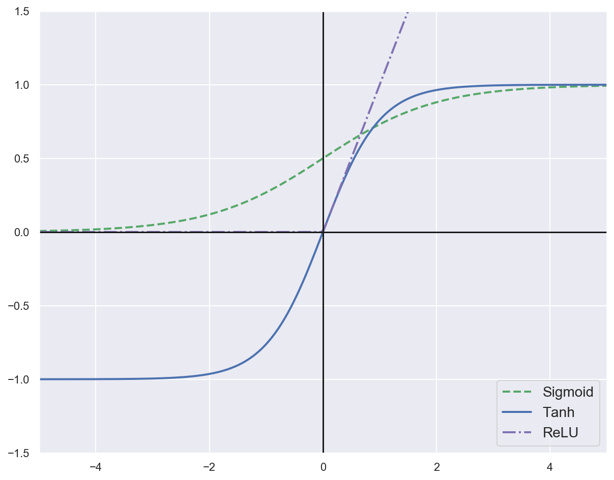

Activation functions#
Environment setup#
import platform
print(f"Python version: {platform.python_version()}")
assert platform.python_version_tuple() >= ("3", "6")
import numpy as np
import matplotlib
import matplotlib.pyplot as plt
import seaborn as sns
from scipy.special import softmax
Python version: 3.7.5
# Setup plots
%matplotlib inline
plt.rcParams["figure.figsize"] = 10, 8
%config InlineBackend.figure_format = 'retina'
sns.set()
Sigmoid function#
Outputs a number between 0 and 1.
\[\sigma(z) = \frac{1}{1 + e^{-z}}\]
\[\sigma'(z) = \frac{e^{-z}}{(1 + e^{-z})^2} = \sigma(z)\big(1 - \sigma(z)\big)\]
def sigmoid(z):
return 1 / (1 + np.exp(-z))
tanh function (hyperbolic tangent)#
\[tanh(z) = 2\sigma(2z) - 1\]
def tanh(z):
return 2 * sigmoid(2 * z) - 1
ReLU function (Rectified Linear Unit)#
\[ReLU(z) = max(0,z)\]
def relu(z):
return np.maximum(0, z)
z = np.linspace(-5, 5, 200)
plt.plot(z, sigmoid(z), "g--", linewidth=2, label="Sigmoid")
plt.plot(z, tanh(z), "b-", linewidth=2, label="Tanh")
plt.plot(z, relu(z), "m-.", linewidth=2, label="ReLU")
plt.plot([-10, 10], [0, 0], "k-")
plt.plot([0, 0], [-1.5, 1.5], "k-")
plt.axis([-5, 5, -1.5, 1.5])
plt.legend(loc="lower right", fontsize=14)
plt.show()

Softmax function#
Transforms a vector \(\pmb{v} \in \pmb{R}^K\) into a probability distribution. Multiclass generalization of the sigmoid function.
\[\sigma(s(\pmb{x}))_k = \frac{e^{s_k(\pmb{x})}}{\sum_{k=1}^K {e^{s_k(\pmb{x})}}}\;\;\;\;
\sum_{k=1}^K \sigma(s(\pmb{x}))_k = 1\]
\(K\): number of classes.
\(s(\pmb{x})\): vector containing the scores of each class for the instance \(\pmb{x}\).
\(\sigma(s(\pmb{x}))_k\): probability that \(\pmb{x}\) belongs to class \(k\).
# Print probability distribution for a sample vector
scores = [3.0, 1.0, 0.2]
s = softmax(scores)
print(s)
# Sum of all probabilities is equal to 1
print(sum(s))
[0.8360188 0.11314284 0.05083836]
1.0